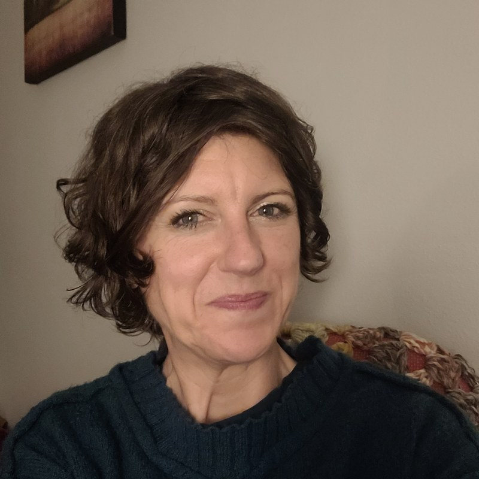

A playfully serious venture oriented toward emergence.
AS the Field supports hosts in organizing virtual or hybrid unconferences designed to elicit emergent collective intelligence and facilitate generative contrast in the service of engaging participants and organizers alike in co-creating events based in relevant topics and themes.
Request a ConsultationAs consultants, we support sourcekeepers and organizers in hosting unconferences. Our role is to coach and equip as needed for facilitators to feel confident in hosting, managing potential tensions, and finishing with information which supports them for future development.
Coaching looks like video calls — talking through overwhelm, loss of spark, which parts feel challenging, and what's big but realistic in terms of near-term and future goals. Typically weekly, plus as-needed, with some text-based messages of support in between.
We invite volunteering at every turn, then work with those volunteers until they feel capable in their responsibilities. This isn't about filling seats with warm bodies — roles emerge from what feels necessary, interesting, and engaging to the people taking them on. Every engagement here is fairly bespoke.
We help hosts understand emergence and co-creation, letting the gathering build itself with enough structure to hold — and enough space for the surprises: new formats, teams, or sessions that feel important and that people want to commit to.
Often an unconference ends and there's nothing to point back to — scattered notes, long recordings, transcripts nobody will watch. We help generate (or support the generation of) artefacts your team can actually use afterward for sense-making, meaning-making, and taking action: a Miro or Mural board, a geographic map, a custom app (or several), a phone tree, an evocative image, an audio artefact — whatever fits what happened.
Every engagement starts the same way: with conversation, not a sales pitch. Before we talk tools or timelines, we want to understand why this gathering matters and what you hope people feel when they leave it. From there, support is modular — take what you need:
[Placeholder] Beyond the Sourcekeeper, most unconferences quietly need a handful of roles that rarely get named out loud. We give them names anyway — partly because it's useful, partly because we think the work deserves a little delight.
[Placeholder] Keeps day-to-day decisions honest to the original intent of the gathering.
[Placeholder] Makes room for healthy disagreement before it hardens into conflict.
[Placeholder] Catches the small frustrations early — those tend to do more damage over time than any single big blow-up.
[Placeholder] Protects the event from quietly growing past what organizers can actually support, and helps tell a good idea from a distraction.
[Placeholder] Reconnects everyone to the point of the gathering, celebrates progress, and keeps energy up through the tired middle stretch.
[Placeholder] Balances enthusiasm against the honest realities of time, staffing, and capacity.
[Placeholder] Clarifies who decides what, and backs up facilitators when a firm boundary is needed.
[Placeholder] Documents the unfolding event — patterns, stories, decisions — into living artefacts the community can keep using after the closing session.
[Placeholder] A short primer for anyone new to the format.
Traditional conferences lock in keynote speakers and topics months in advance. At an unconference, the people hosting a session choose their topic close to the event itself — because it feels alive, timely, or worth talking about right now, not because it was set on a program months ago.
Anyone can add a call — organizer or participant, first-timer or veteran. There's no primary speaker. Some sessions draw more people, some hosts bring more experience, but everyone starts on equal footing. Good conversations rise because people are drawn to them, not because someone was pre-selected to have them.
This is a close cousin of Open Space Technology: an unconference may have a theme or a few constraints, but what actually gets discussed — and who leads it — takes shape in the room. Just enough structure to keep things workable, just enough openness for something unexpected and alive to happen.
[Placeholder] Every engagement begins with conversation, not a sales pitch. Before we talk tools or timelines, we want to understand why the gathering matters, what success looks like, and what you hope people feel when they leave. Technology should serve human intention, not replace it — so it stays in the background, doing its job quietly rather than becoming the main event. And because relationships come before templates, our recommendations grow out of what we observe and learn with each group, rather than a one-size-fits-all playbook.
[Placeholder] Photos from previous events will go here.
[Placeholder] AS the Field is a small team of consultants who coach and support the people behind generative unconferences. Here's a bit about each of us — more to come.
[Placeholder bio for Christine — background, experience, and what she brings to the team. To be filled in.]
[Placeholder bio for Danielle — background, experience, and what she brings to the team. To be filled in.]

Mari Budlong is a mother of four, sister to four, a veteran, coach, and multi-faceted human who believes our humanity is worth tending as we grow alongside our quickly evolving technology. With a deep concern for the relational and ecological impacts of our choices — digital and otherwise — she brings heart, humor, and wonder to conversations where tech meets soul.
A few terms we use often. We'll keep adding to this list.
Tell us a bit about your group and what you're hoping to gather people around. We'll follow up to schedule a conversation.